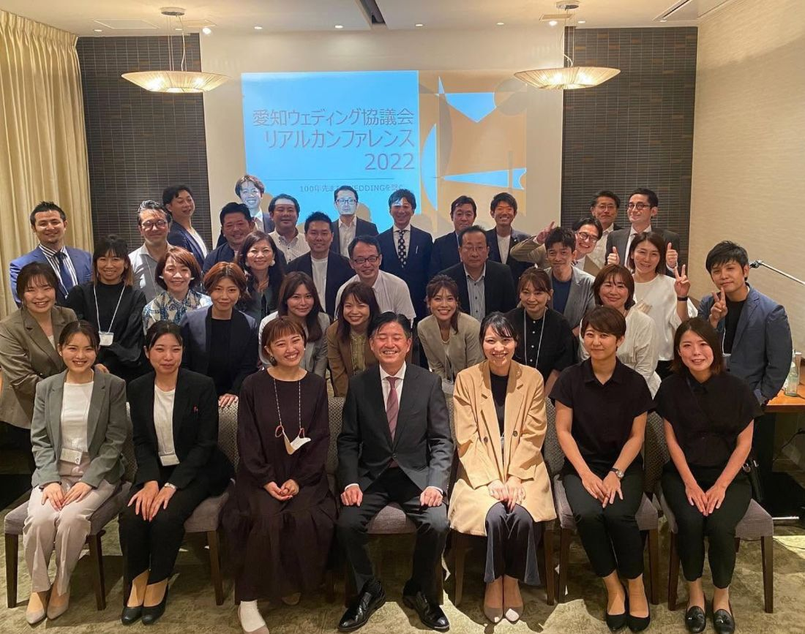

愛知ウェディング協議会 リアルカンファレンス2022を開催いたしました！ たくさんのご参加、ありがとうございました！

今回のセミナーは、《基本から学ぶ LGBTQウェディングセミナー》。フリーウェディングプランナーのKasumiさんにご登壇いただき、基礎から、そして実際の事例も踏まえながらお話しいただきました。
多様な二人のかたちが当たり前になっていくなかで、すべてのカップルに心から寄り添うために——立場を問わず、大切な学びを持ち帰っていただける時間になったのではないかと思います。
セミナーの後には、懇親会も開催しました。
会員の皆さまはもちろん、この日ご参加いただいた非会員の皆さまとも、直接お顔を合わせて交流できたこと。画面越しでは得られない、あたたかな時間となりました。ご参加くださったすべての皆さまに、心より御礼申し上げます。
会員の皆様も、いつもありがとうございます。皆さまのお力があってこそ、協議会はこうして活動を続けることができています。引き続き、愛知ウェディング協議会をよろしくお願いいたします！
これからも、ウェディング業界の発展と、この地域の結婚という文化を守り育てるために、一つひとつ取り組んでまいります。